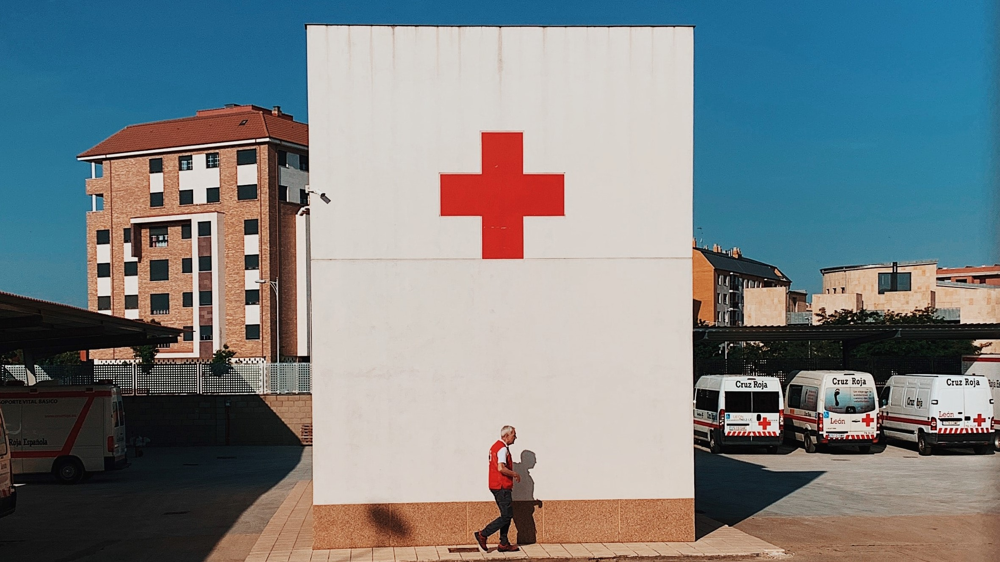

|
Palang Merah Remaja

Sumber gambar: unsplash
PMR merupakan singkatan dari Palang Merah Remaja. PMR SMA 11 Maret mempunyai Visi dan Misi berjuang menolong sesama tanpa membedakan satu sama lain yang berlandaskan pada tujuh prinsip dasar gerakan palang merah
dan Bulan Sabit Merah Internasional serta Tri Bakti PMR.
Organisasi PMR SMA 11 Maret diberi nama PMR Wira, yang berdiri sejak tahun 2002. Para pendiri PMR itu sendiri berasal dari siswa siswi SMA 11 Maret yang dikenal sebagai angkatan Perintis. Mereka berjumlah 4 orang
yaitu Wili, Soni, Ata, dan Sonia. Hal ini memberikan kebanggaan tersendiri bahwa organisasi yang mereka didirikan masih aktif hingga sekarang.
Saat ini, PMR WIRA sudah melahirkan 8 angkatan penerus. Adapun struktur keorganisasian PMR terdiri dari Pengurus Harian (beranggotakan Ketua, Wakil Ketua , Sekretaris Umum, Sekretaris I, Sekretaris II, Bendahara I,
Bendahara II). Serta terdapat 6 Divisi yang bernaung di bawah pengurus harian, yaitu UKS, PPSDM (Pendidikan Perkembangan Sumber Daya Manusia), Humas, Apsen (Apresiasi Seni), Litbang (Peneliti dan Pengembangan), dan
Danus (Dana Usaha).
|